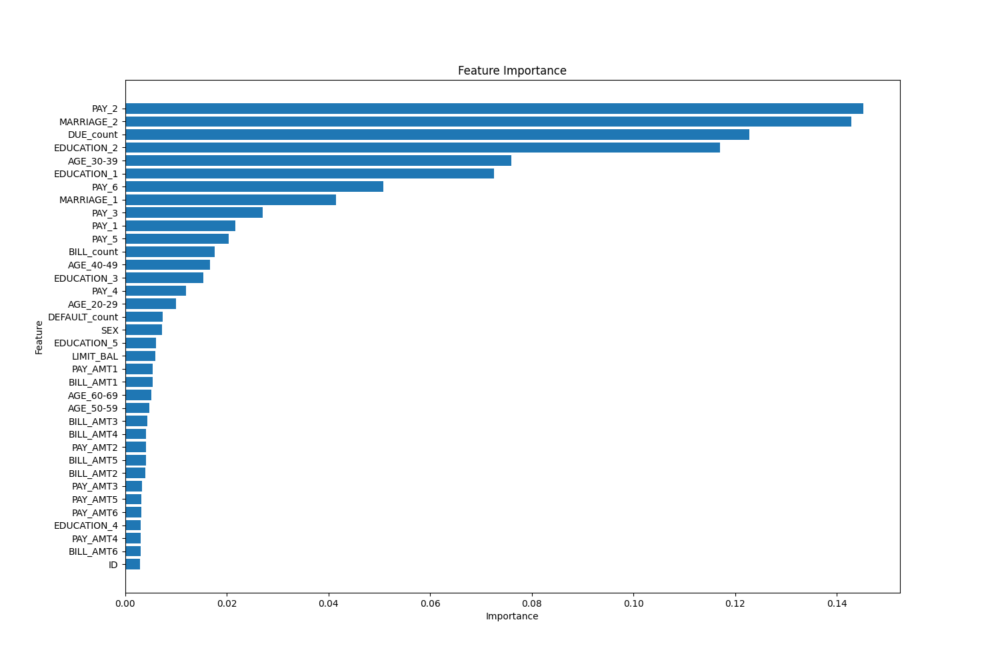

Credit Default Prediction

This project is a notebook which predicts which customers will default on the next months payment. After analysing the data and looking at the counts I established the best approach for the data. Which inlcluded creating more features to better capture the patterns in the data. The above figure shows all the featuresand their predict power which found fitting the data with XGBoost.
Loading and analysis of the data was done using pandas. The minority value in the default column is oversampled. To improve recall to better capture the patterns of those who would default such that the patterns would not be confused with the compliant clients.
The goal of this project is to fit and tune a model to score of above 0.80 accuracy and above 0.75 recall, to capture the patterns of the defaulters.